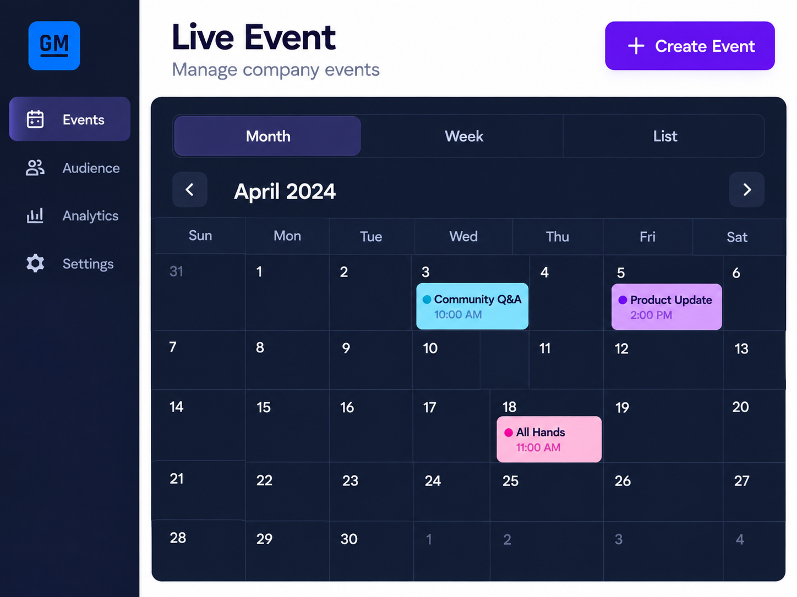

General Motors / 03
Broadcasting Event Platform
Designed workflows and contributed to frontend implementation for corporate events.

Independent portfolio remake
Explore the BSA prototype.
This interactive Figma remake reinterprets my Broadcasting Services project experience. It is not the original GM application, a production screenshot, or an official GM product.
Try the BSA Figma remake01 / The problem
What needed to change.
GM needed to redesign and redevelop an enterprise broadcasting and event management platform used to coordinate live corporate events, Mary Barra executive-level broadcasts, large-scale internal events, and organization-wide live productions.
02 / My contribution
Where I made a difference.
- Served as a lead contributor across UX/UI and frontend development, designing the platform experience from the ground up.
- Created wireframes, user flows, interactive prototypes, high-fidelity UI systems, and multi-view calendar workflows.
- Contributed heavily to frontend implementation while collaborating with backend and infrastructure teams on data flow, workflow logic, and scalability.
- Supported backend and database-related efforts around application logic, event data structures, and platform integration requirements.
03 / Product capabilities
What the product supported.
- Multi-view calendar
- Event requests and approvals
- Admin dashboards
- Role-based visibility
- Live event coordination
04 / Outcome
Why it mattered.
Modernized how enterprise broadcasting events were coordinated across GM, creating a more streamlined and user-friendly experience for employees submitting events and administrators managing high-visibility corporate productions.